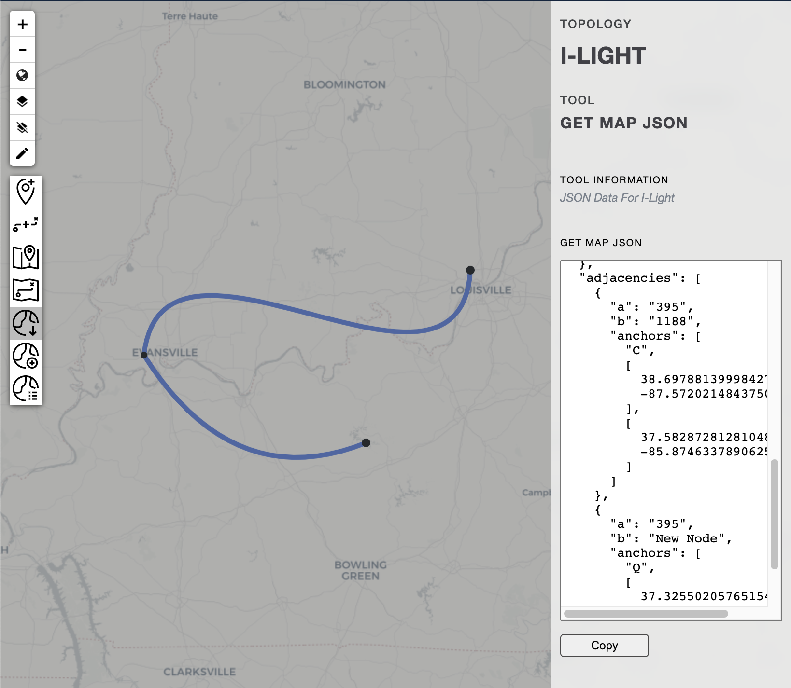
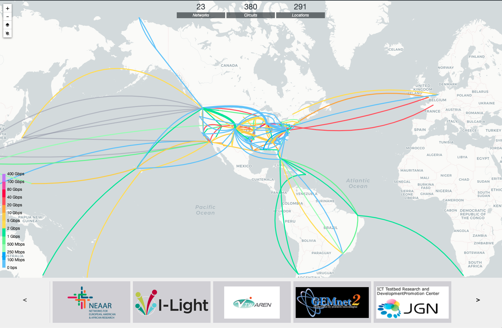
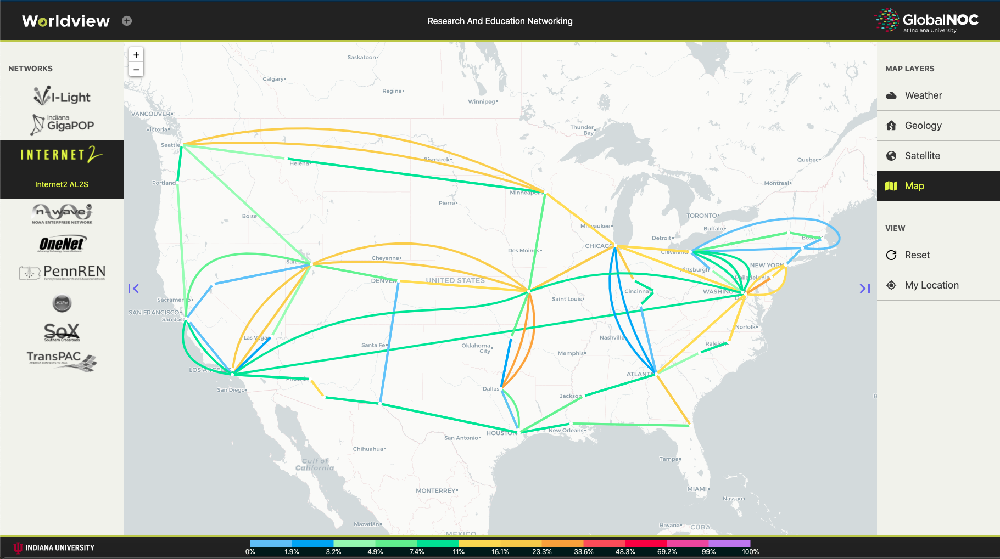

FULL TIME
Next-Gen Mapping at GlobalNOC
October 15 2019
First Software Developer Job
2019 was the year I decided to shift my focus to computer science more heavily. That summer I took a couple of JavaScript foundation classes and also made this portfolio website to showcase my projects. I was (still am) so proud of my portfolio website. Funny story, I was walking around the booths during the career fair with my laptop. Whenever I would start speaking with a recruiter I would pull my laptop screen out like a total show off to show them this website. But it worked! I landed my first software developer job at GlobalNOC.
The Global Research Network Operations Center (GlobalNOC) at Indiana University has been delivering a diverse set of services to operate, manage, and evolve research and education (R&E) networks around the world. I loved all the stuff they were working on and quite frankly was amazed to see the amount of logistics required to support a network. I joined the Network Collection and Data Analysis team as an hourly employee (later full-time in June 2020) during the penultimate semester of college. The project I was assigned to was right up my alley.
Maps Maps Maps
For most of our customer networks, we provide them with a customer portal that has a birds eye view of
all their circuits on a geographical map. Those circuits are then colored based off what stat (like alarm data, bandwidth, speed etc)
they would want to see on the network. Now, up until late 2019, making a circuit map would require a lot of manual labor, where a person would have to hand crank a JSON file and then make a software driver to render the circuits using a mapping library like leafletJS or D3. We wanted a map editor sort of like photoshop but for geographical circuits. Thats when I started working with my team to help them write an extension to leaflet.js that would help in creating circuit maps on the fly.
The library is called Atlas and here are some of the screenshots of what I worked on:
Using Atlas.js we can easily add curves to a circuit
Add new nodes using the Add Node tool
Connect any two nodes with the Add Line tool
Also get the dynamically created JSON map to import to other libraries
Updating Maps? Ooh Boy 🥵
Imagine a network has 5 circuit maps displaying different data on each one of them. If they add a new physical circuit in their network, we would have to update all the 5 maps individually. Since we support more than 20 different networks, updating maps every time a new circuit was added/deleted was a tedious task. To solve this issue, we would next work on creating an application layer over Atlas to unify all the separate map instances.
The application side of map builder would house the atlas editor. Customers and network engineers would then be able to create/edit their own maps. The back end written in Flask would locally store the map in a database. Now, different customer portals could use the map builder api to pull the same version of the map and supply it with the custom data they want to display on the map. Here is a rough outline of the project architecture:
Next-Gen Mapping Tools Stack
Putting it all together
After moving all the maps to their respective map builder hosts, the only thing left to do was rewrite the presentation layer applications to talk to different map builders and draw the latest circuit map. We have two such applications that are available to view publicly. The Global Research Map and Worldview. Screenshots added below:
 More to come